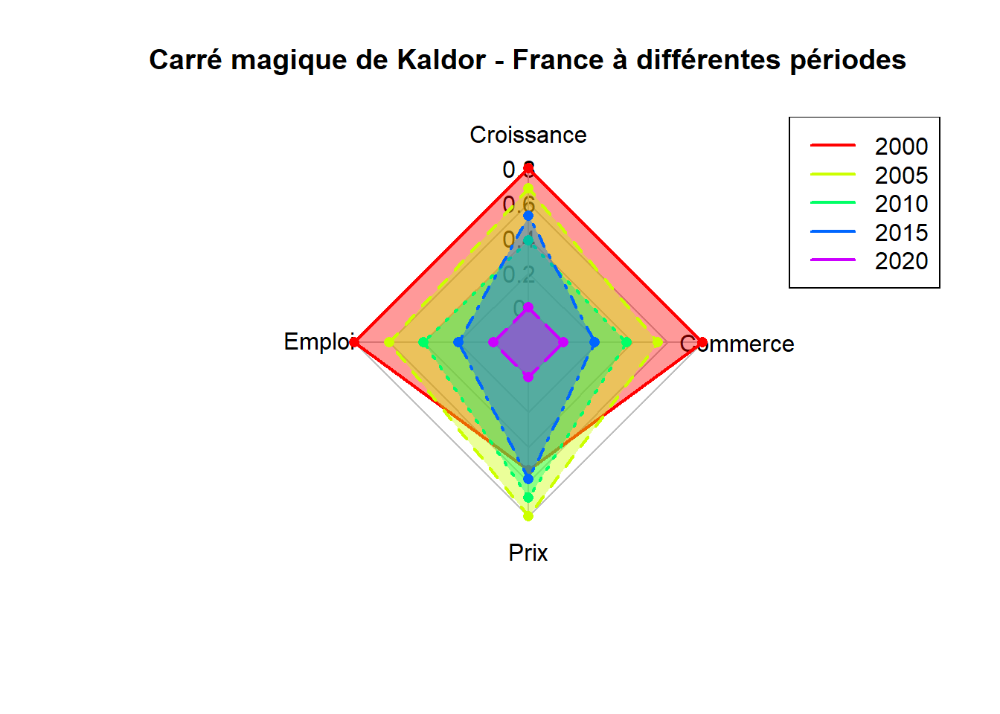

Show the code
# Étape 1 : Préparer les données
data_france <- data.frame(
periode = c("2000", "2005", "2010", "2015", "2020"),
croissance = c(3.0, 2.5, 1.2, 1.8, -0.5), # Croissance économique (%)
emploi = c(93, 91, 89, 87, 85), # Taux d'emploi (%)
prix = c(1.5, 2.0, 1.8, 1.6, 0.5), # Inflation (%)
commerce = c(0.2, -0.5, -1.0, -1.5, -2.0) # Balance commerciale (% du PIB)
)
# Étape 2 : Normaliser les données
normalize <- function(x) {
(x - min(x)) / (max(x) - min(x))
}
data_normalized <- data_france
data_normalized[, -1] <- as.data.frame(lapply(data_france[, -1], normalize))
# Étape 3 : Préparer les données pour le graphique radar
# Installer et charger le package fmsb si nécessaire
library(fmsb)
# Ajouter les lignes pour les max et min (requis pour le package fmsb)
radar_data <- rbind(
rep(1, 4), # Valeurs maximales après normalisation
rep(0, 4), # Valeurs minimales après normalisation
data_normalized[, -1] # Données normalisées
)
# Nommer les colonnes pour le graphique radar
colnames(radar_data) <- c("Croissance", "Emploi", "Prix", "Commerce")
rownames(radar_data) <- c("Max", "Min", data_france$periode)
# Étape 4 : Tracer le carré magique
radarchart(
radar_data,
axistype = 1,
pcol = rainbow(nrow(data_france)), # Couleurs pour chaque période
pfcol = rainbow(nrow(data_france), alpha = 0.4), # Couleurs remplies
plwd = 2, # Épaisseur des lignes
cglcol = "grey", cglty = 1, axislabcol = "black", caxislabels = seq(0, 1, 0.2),
title = "Carré magique de Kaldor - France à différentes périodes"
)
# Ajouter une légende
legend(
"topright",
legend = data_france$periode,
col = rainbow(nrow(data_france)),
lty = 1, lwd = 2
)